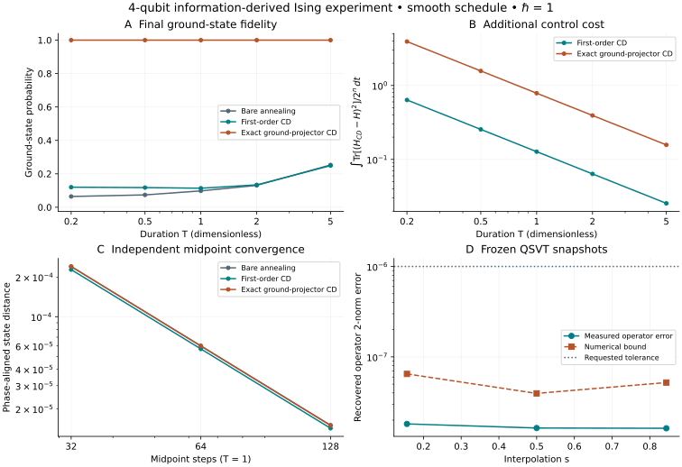

ADMET
Molecular learning across a verified runtime boundary
Connect molecular data preparation, counterdiabatic control and QSVT to a measurement-based learning workflow.
1,965 labelled molecules prepared; private execution confirmed.
Motivation
A quantum molecular-learning pipeline needs consistent data fitting, Hamiltonian construction, circuit approximation and measurement contracts before its predictive results can be interpreted.
Implementation
I developed the reusable library underpinning this pipeline. Morgan count fingerprints feed information-screened Ising interactions and molecule-specific counterdiabatic controls. Heralded cosine/sine QSVT branches, direct-exponential references and runtime/result bindings are checked independently. Scaffold-separated classical controls and a post-measurement logistic readout complete the disclosed workflow.
Results
The supervised preparation retains 1,965 labelled molecular identities and all 1,975 valid structures for measurement or prediction. The author confirms successful private compilation and execution through Horizon Quantum’s Triple Alpha workflow; proprietary outputs remain confidential. Public checks reproduce the disclosed offline pipeline.
Limitations
The Hamiltonian is a dimensionless data encoding, not an electronic-structure Hamiltonian or a calibrated biological mechanism. Public quantum ADMET predictive accuracy is not established. First-order counterdiabatic control does not improve fidelity at every tested duration. Public CI does not independently reproduce the private execution.
